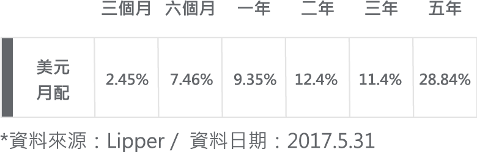
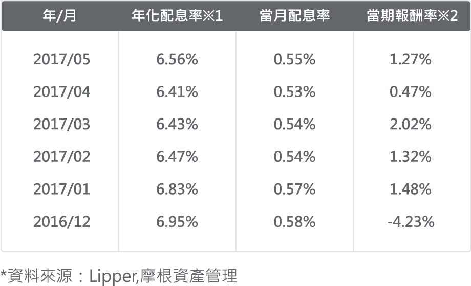
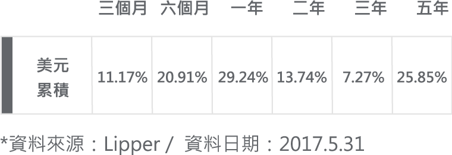
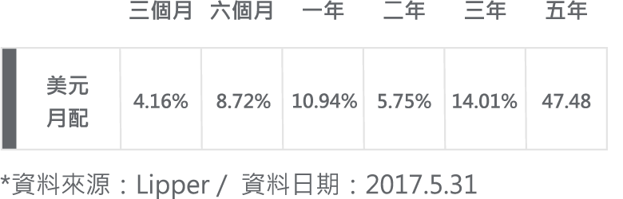
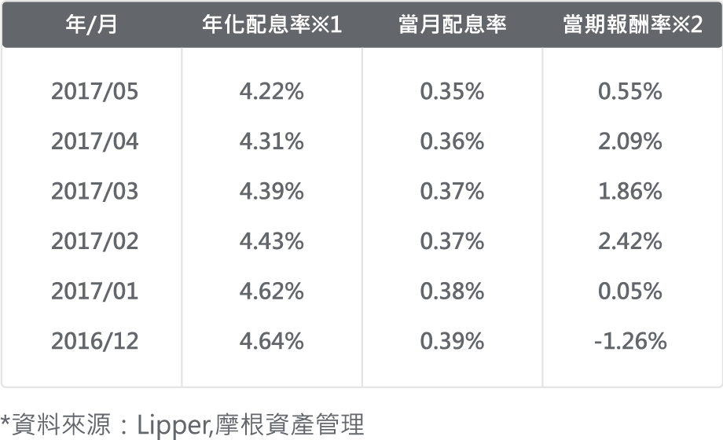
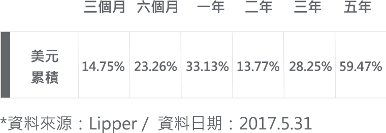

• 掌握新興市場債券「利率」「利差」「匯率」等多重收益來源
• 以新興主權債為主，也可投資新興企業債、本地債，投資機會更多元
立即開境外基金帳戶
新興再起
新興股債今年以來皆傳捷報，展望美元升勢趨緩、新興市場基本面好轉，新興股債熱度仍可持續不墜
推薦月配基金
摩根基金-新興市場債券基金<原摩根新興市場債券基金>
(本基金有相當比重投資於非投資等級之高風險債券且配息來源可能為本金)
(本基金有相當比重投資於非投資等級之高風險債券且配息來源可能為本金)
基金特色
基金累積績效

基金歷史配息紀錄

※1基金配息之年化配息率為估算值，計算公式為「每單位配息金額 ÷ 除息日前一日之淨值 × 100% × 一年配息次數（年配：1次、半年配：2次、季配：4次、月配：12次、雙月紅利：6次）」。
※2當期報酬率（含息）是將該收益分配期間所分配之收益均假設再投資於本基金之累計報酬率。（當期報酬率為配息月前一個月／季／半年／年之報酬率）。
基金配息率不代表基金報酬率，且過去配息率不代表未來配息率；基金淨值可能因市場因素而上下波動。
※2當期報酬率（含息）是將該收益分配期間所分配之收益均假設再投資於本基金之累計報酬率。（當期報酬率為配息月前一個月／季／半年／年之報酬率）。
基金配息率不代表基金報酬率，且過去配息率不代表未來配息率；基金淨值可能因市場因素而上下波動。
定期(不)定額推薦基金
摩根基金-全方位新興市場基金
基金特色
• 鎖定新興市場內具長期成長潛力之市場與股票，不受大盤權重限制
• 1994年成立至今，歷經新興市場多次起伏變化
• 1994年成立至今，歷經新興市場多次起伏變化
基金累積績效

亞洲神起
今年以來，新興市場中由亞洲帶頭領漲，表現相當亮眼，目前看到出口及企業獲利回升，下半年科技題材更是觀察重點
推薦月配基金
摩根基金-亞太入息基金<原摩根亞太入息基金>(本基金之配息來源可能為本金)
基金特色
• 兩高準則：高股息及高股價成長
• 多元收益：網羅亞洲股、債、房市收益，現階段加碼受惠利率走升與經濟成長前景看佳的循環型產業
• 動態調整：隨利率環境動態調整投資組合，近期調降債券利率敏感度
• 多元收益：網羅亞洲股、債、房市收益，現階段加碼受惠利率走升與經濟成長前景看佳的循環型產業
• 動態調整：隨利率環境動態調整投資組合，近期調降債券利率敏感度
基金累積績效

基金歷史配息紀錄

※1基金配息之年化配息率為估算值，計算公式為「每單位配息金額 ÷ 除息日前一日之淨值 × 100% × 一年配息次數（年配：1次、半年配：2次、季配：4次、月配：12次、雙月紅利：6次）」。
※2當期報酬率（含息）是將該收益分配期間所分配之收益均假設再投資於本基金之累計報酬率。（當期報酬率為配息月前一個月／季／半年／年之報酬率）。
基金配息率不代表基金報酬率，且過去配息率不代表未來配息率；基金淨值可能因市場因素而上下波動。
※2當期報酬率（含息）是將該收益分配期間所分配之收益均假設再投資於本基金之累計報酬率。（當期報酬率為配息月前一個月／季／半年／年之報酬率）。
基金配息率不代表基金報酬率，且過去配息率不代表未來配息率；基金淨值可能因市場因素而上下波動。
定期(不)定額推薦基金
摩根亞洲增長基金<原摩根亞洲內需主題>
基金特色
• 再升級：亞洲投資再升級，瞄準愈三十億人口的高成長潛力商機
• 強主軸：掌握受惠中產階級崛起的金融、消費、建設、科技等投資主軸
• 特精選：精選亞洲優質企業，參與亞洲結構轉型，產業升級下投資機會
• 強主軸：掌握受惠中產階級崛起的金融、消費、建設、科技等投資主軸
• 特精選：精選亞洲優質企業，參與亞洲結構轉型，產業升級下投資機會
基金累積績效

境外定期(不)定額優惠基金
核心資產首選
- 摩根投資基金-策略總報酬基金 （美元對沖）（累計）<原摩根投資基金策略總報酬基金（美元對沖）累計> （本基金有相當比重投資於非投資等級之高風險債券）
- 摩根投資基金-多重收益基金 （美元對沖）（累計）（本基金有相當比重投資於非投資等級之高風險債券）
- 摩根基金-亞太入息基金 （美元）（累計） <原摩根亞太入息基金 （美元）累計>
- 摩根投資基金-環球股息基金 （美元）（累計） <原摩根投資基金環球股息基金（美元）累計>
債券型基金
- 摩根投資基金-環球高收益債券基金 （美元）（累計） <原摩根投資基金環球高收益債券基金（美元） > （本基金主要係投資於非投資等級之高風險債券）
- 摩根基金-新興市場債券基金 （美元）（累計）<原摩根新興市場債券基金（美元）>（本基金有相當比重投資於非投資等級之高風險債券）
- 摩根基金-新興市場本地貨幣債券基金 （美元）（累計）<原摩根新興市場本地貨幣債券基金>
- 摩根基金-環球企業債券基金 （美元）（累計）<原摩根環球企業債券基金>
產業型基金
- 摩根基金-環球天然資源基金 （美元）（累計）<原摩根環球天然資源基金（美元）>
- 摩根基金-環球醫療科技基金 （美元）（累計）<原摩根環球醫療科技基金（累計）>
成熟市場股票基金
- 摩根日本（日圓） 美元對沖累計
- 摩根基金-歐洲小型企業基金 （美元）（累計）<原摩根歐洲小型企業基金（美元）>
- 摩根基金-歐洲動力基金 （美元）（累計）<原摩根歐洲動力基金（美元）>
- 摩根基金-美國小型企業股票基金 （美元）（累計）
- 摩根基金-美國基金 （美元）（累計）< 原摩根美國基金（美元）（累計）>
新興市場股票基金
- 摩根東協基金 （美元）
- 摩根泰國基金
- 摩根基金-印尼股票基金 （美元）（累計）<原摩根印尼股票基金（累計）>
- 摩根亞洲增長基金 <原摩根亞洲內需主題>
- 摩根基金-中國基金 （美元）（ 累計）
- 摩根基金-大中華基金 （美元）（ 累計）
- 摩根南韓基金
- 摩根印度基金
- 摩根太平洋證券基金
- 摩根基金-全方位新興市場基金 （美元）（累計）
- 摩根基金-新興市場小型企業基金 （美元）（累計）<原摩根新興市場小型企業基金>
- 摩根基金-新興歐洲股票基金 （美元）（累計）<原摩根新興歐洲股票基金（美元）（原摩根東歐）>
- 摩根基金-俄羅斯基金 （美元）（ 累計）
- 摩根基金-巴西基金 （美元）（累計）<原摩根巴西基金>
- 摩根基金-拉丁美洲基金 （美元）（ 累計）
投信定期(不)定額優惠基金
核心資產首選
- 摩根多元入息成長基金 （累積型）
- 摩根亞洲總合高收益債券基金 （累積型） （本基金主要係投資於非投資等級之高風險債券）
債券型基金
- 摩根新興活利債券基金 （累積型） （本基金有相當比重投資於非投資等級之高風險債券）
- 摩根新興龍虎企業債券基金 （累積型） （本基金有相當比重投資於非投資等級之高風險債券）
- 摩根總收益組合基金（累積）
產業型基金
- 摩根新興科技基金
- 摩根東方科技基金
成熟市場股票基金
- 摩根全球α基金
- 摩根大歐洲基金
- 摩根環球股票收益基金 （累積型）
- 摩根絕對日本基金
新興市場股票基金
- 摩根中國A股基金
- 摩根中國亮點基金
- 摩根亞洲基金
- 摩根新絲路基金
- 摩根新興35基金
- 摩根新金磚五國基金
- 摩根東方內需機會基金
- 摩根泛亞太股票入息基金 （累積型）
- 摩根龍揚基金
- 摩根中國雙息平衡基金 （累積型） （本基金有相當比重投資於非投資等級之高風險債券）
- 摩根亞太高息平衡基金 （累積型）
- 摩根全球平衡基金
- 摩根新興雙利平衡基金 （累積型） （本基金有相當比重投資於非投資等級之高風險債券）
台灣
- 摩根中小基金
- 摩根台灣增長基金
- 摩根台灣金磚基金
- 摩根平衡基金
境外月配基金
- 摩根投資基金-歐洲策略股息基金 （本基金之配息來源可能為本金） <原摩根投資基金歐洲策略股息基金>
- 摩根投資基金-環球股息基金 （本基金之配息來源可能為本金） <原摩根投資基金環球股息基金>
- 摩根基金-亞太入息基金 （本基金之配息來源可能為本金） <原摩根亞太入息基金>
- 摩根投資基金-多重收益基金 （本基金有相當比重投資於非投資等級之高風險債券且配息來源可能為本金）
- 摩根基金-新興市場企業債券基金 （本基金有相當比重投資於非投資等級之高風險債券且配息來源可能為本金） <原摩根新興市場企業債券基金>
- 摩根基金-新興市場債券基金 （本基金有相當比重投資於非投資等級之高風險債券且配息來源可能為本金） <原摩根新興市場債券基金>
- 摩根基金-新興市場本地貨幣債券基金 （本基金之配息來源可能為本金） <原摩根新興市場本地貨幣債券基金>
- 摩根基金-環球企業債券基金 （本基金之配息來源可能為本金） <原摩根環球企業債券基金>
- 摩根基金-環球策略債券基金 （本基金有相當比重投資於非投資等級之高風險債券且配息來源可能為本金） <原摩根環球策略債券基金>
- 摩根基金-美國複合收益債券基金 （本基金之配息來源可能為本金） <原摩根美國複合收益基金>
- 摩根投資基金-環球高收益債券基金 （本基金主要係投資於非投資等級之高風險債券且配息來源可能為本金）<原摩根投資基金環球高收益債券基金>
投信月配基金
- 摩根泛亞太股票入息基金 （本基金之配息來源可能為本金）
- 摩根環球股票收益基金 （本基金之配息來源可能為本金）
- 摩根中國雙息平衡基金 （本基金有相當比重投資於非投資等級之高風險債券且配息來源可能為本金）
- 摩根多元入息成長基金 （本基金之配息來源可能為本金）
- 摩根新興雙利平衡基金 （本基金有相當比重投資於非投資等級之高風險債券且配息來源可能為本金）
- 摩根亞洲總合高收益債券基金 （本基金有相當比重投資於非投資等級之高風險債券且配息來源可能為本金）
- 摩根新興活利債券基金 （本基金有相當比重投資於非投資等級之高風險債券且配息來源可能為本金）
- 摩根新興龍虎企業債券基金 （本基金有相當比重投資於非投資等級之高風險債券且配息來源可能為本金）
- 摩根總收益組合基金 （本基金之配息來源可能為本金）
境外月配基金
- 摩根投資基金-歐洲策略股息基金 （本基金之配息來源可能為本金） <原摩根投資基金歐洲策略股息基金>
- 摩根投資基金-環球股息基金 （本基金之配息來源可能為本金） <原摩根投資基金環球股息基金>
- 摩根基金-亞太入息基金 （本基金之配息來源可能為本金） <原摩根亞太入息基金>
- 摩根投資基金-多重收益基金 （本基金有相當比重投資於非投資等級之高風險債券且配息來源可能為本金）
- 摩根基金-新興市場企業債券基金 （本基金有相當比重投資於非投資等級之高風險債券且配息來源可能為本金） <原摩根新興市場企業債券基金>
- 摩根基金-新興市場債券基金 （本基金有相當比重投資於非投資等級之高風險債券且配息來源可能為本金） <原摩根新興市場債券基金>
- 摩根基金-新興市場本地貨幣債券基金 （本基金之配息來源可能為本金） <原摩根新興市場本地貨幣債券基金>
- 摩根基金-環球企業債券基金 （本基金之配息來源可能為本金） <原摩根環球企業債券基金>
- 摩根基金-環球策略債券基金 （本基金有相當比重投資於非投資等級之高風險債券且配息來源可能為本金） <原摩根環球策略債券基金>
- 摩根基金-美國複合收益債券基金 （本基金之配息來源可能為本金） <原摩根美國複合收益基金>
- 摩根投資基金-環球高收益債券基金 （本基金主要係投資於非投資等級之高風險債券且配息來源可能為本金）<原摩根投資基金環球高收益債券基金>
投信月配基金
- 摩根泛亞太股票入息基金 （本基金之配息來源可能為本金）
- 摩根環球股票收益基金 （本基金之配息來源可能為本金）
- 摩根中國雙息平衡基金 （本基金有相當比重投資於非投資等級之高風險債券且配息來源可能為本金）
- 摩根多元入息成長基金 （本基金之配息來源可能為本金）
- 摩根新興雙利平衡基金 （本基金有相當比重投資於非投資等級之高風險債券且配息來源可能為本金）
- 摩根亞洲總合高收益債券基金 （本基金有相當比重投資於非投資等級之高風險債券且配息來源可能為本金）
- 摩根新興活利債券基金 （本基金有相當比重投資於非投資等級之高風險債券且配息來源可能為本金）
- 摩根新興龍虎企業債券基金 （本基金有相當比重投資於非投資等級之高風險債券且配息來源可能為本金）
- 摩根總收益組合基金 （本基金之配息來源可能為本金）
活利終身0
生生不止息，用息再投資長期活利終身0
*外幣適用申購門檻請詳活動規則
單筆新申購月配基金30萬，即享定期(不)定額終身0
「以定期(不)定額長期投資」，一直是許多投資高手最為推崇的投資心法！
藉此心法，除了能避開追高殺低的人性弱點，還能持續參與股市「長期向上」的累積成果。 只不過，帳戶資金總有扣光的一天，長期投資也常被迫中斷．．． 如果，我們能擁有個「生生不止息的資產池」持續產生資金，讓我們的「長期投資」無止無盡的進行下去，那該多好？
讓月配基金為您創造額外的現金流、生生不止息的投資籌碼；同時，將月配基金之配息活化運用，亦即將每月的配息現金流再投資於定期(不)定額，如此自動循環的永續機制，讓您輕鬆成就長期投資的目標與夢想！
您的存款
“固定”資產
月配
創造額外現金流
創造額外現金流
固定收益
定期定額
更重要的是，只要在活動期間（4/5至6/30）
單筆新申購摩根投信／境外所有月配息基金30萬新台幣以上（外幣適用申購門檻請詳活動規則），並搭配定期(不)定額方式投資摩根精選投信基金／境外基金，用配息補充您定期(不)定額扣款的資金來源，就可享定期(不)定額終身０手續費的超值優惠，讓您的長期投資計劃行愈久、省愈多，永續不中斷！
詳閱規則
2017.4.5 – 2017.6.30
只要在活動期間內每月20日（含）結單以前透過以下方式進行投資，次月1日到次月底即可獲得摩根投信／境外多檔精選基金（投信28檔／境外30檔；以下稱優惠基金）定期(不)定額終身0%手續費優惠！
單筆新申購任一月配型基金新台幣30萬元以上（各幣別活動單筆申購門檻如下表）
（各幣別活動單筆申購門檻如下表）
幣別
單筆新申購金額
TWD
300,000
USD
20,000
EUR
20,000
AUD
20,000
JPY
2,000,000
＊外幣僅依照月配型基金最低申購門檻金額，非新台幣30萬元之換算金額

注意事項
- 超過當月20日結單時間下單 （遇假日提前至最近工作日），優惠會在次兩月1日才生效；並於次兩月月底結束，敬請把握機會運用優惠定期(不)定額申購基金。若在取得優惠當月月底之後，有定期(不)定額未扣款、停扣或連續三次扣款失敗，將自動取消終身0%優惠費率。
- 每日結單時間：投信基金16:00／境外基金13:00。
- 單筆新申購月配與定期(不)定額，不限於申購同幣別基金；但需同為投信或境外基金。
- 取得優惠後，定期(不)定額下單優惠選單將會出現「活利終身0：0%」。
- 本活動如有任何爭議，本公司保有最終解釋權。
月配基金及定期(不)定額
精選基金一覽
精選基金一覽
活動期間每月20日（含）以前成功單筆新申購任一檔投信／境外月配型基金新台幣30萬元以上，次月1日到次月底即可取得以下基金定期(不)定額終身0%手續費優惠！
單筆月配基金
投信月配基金
境外月配基金
定期(不)定額優惠基金
投信優惠基金
境外優惠基金
活利精選組合
新興再起
新興股債今年以來皆傳捷報，展望美元升勢趨緩、新興市場基本面好轉，新興股債熱度仍可持續不墜
推薦月配基金
摩根基金-新興市場債券基金<原摩根新興市場債券基金>
(本基金有相當比重投資於非投資等級之高風險債券且配息來源可能為本金)
(本基金有相當比重投資於非投資等級之高風險債券且配息來源可能為本金)
定期(不)定額推薦基金
摩根基金-全方位新興市場基金
more
亞洲神起
今年以來，新興市場中由亞洲帶頭領漲，表現相當亮眼，目前看到出口及企業獲利回升，下半年科技題材更是觀察重點
推薦月配基金
摩根基金-亞太入息基金<原摩根亞太入息基金>
(本基金之配息來源可能為本金)
(本基金之配息來源可能為本金)
定期(不)定額推薦基金
摩根亞洲增長基金<原摩根亞洲內需主題>
more
查詢優惠生效日期
點選您單筆新申購（新台幣30萬以上）月配型基金的預計下單日期（以每日結單時間為準），即可確認定期(不)定額終身優惠的生效與截止日期
查詢結果
您的帳戶將於期間適用「優惠基金」定期(不)定額終身0優惠。